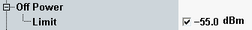

Off Power Limit
The UE power, measured when the UE transmitter is off, is called "OFF power". According to 3GPP TS 34.121, section 5.5.1 Transmit OFF Power, the measured value must be below -55 dBm. The same limit is defined in section 5.5.2 Transmit ON/OFF Time Mask.
You can set a corresponding upper limit in the configuration dialog. It is applied to the OFF power measured before and after the last preamble received by the R&S CMW.

Off power limit